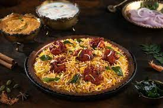
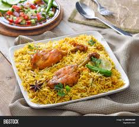
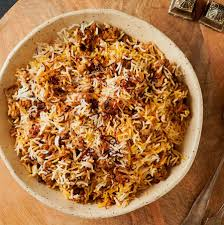
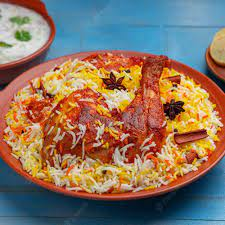

Chicken Dum Biryani753 Ratings258 Rs |500 ML| Served with Raitha&Salad| A Fragrant and aromatic rice dish made with basmatic rice and tender chicken , cooked in layers with a blendm of spices |
 |
Chicken Boneless Biryani482 Ratings339 Rs |500 ML| Served with Raitha&Salad| This Boneless Chicken Biryani recipe is quick biryani which uses boneless chicken and includes potatoes. You will absolutely love how quick and easy it is and this is definitely a recipe to keep |
 |
Chicken Kabab bonelessBiryani167 Ratings359 Rs |500 ML| Served with Raitha&Salad| Boneless chicken cubes are marinated in special spices and sautéed and prepared in the sauce! It is then layered with long premium Basmati rice and Dum-cooked in a sealed Handi! This flavorful Biryani will leave your taste buds wanting more! |
 |
Chicken Drumsticks Biryani482 Ratings339 Rs |500 ML| Served with Raitha&Salad| A savoury fluffy rice and chicken drumsticks dish celebrating the flavours,aromas and colors of Asian cuisine. This Chicken Biryani is made using marinated Humza Chicken Drumsticks curry, South Asian spices and basmati rice layered and cooked in a sealed pot. |
 |
Chicken Khema Biryani167 Ratings359 Rs |500 ML| Served with Raitha&Salad| A delicious and simple to make chicken keema biryani recipe made with chicken mince and basmati rice in aromatic spices. |
 |
Chicken Thndoori Biryani482 Ratings339 Rs |500 ML| Served with Raitha&Salad| Dum cooked traditional zeerak samba rice with rich flavors and trapped with Mug Tandoori,served along with raita. |
 |